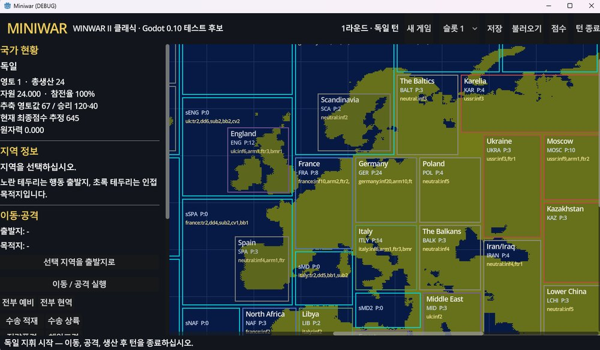

웹 프로토타입에서 배포 빌드까지.0.1 브라우저 프로토타입 → Godot 0.21 배포. 회귀 테스트로 매 단계를 잠갔다.
Miniwar는 2026-07-10 브라우저 프로토타입으로 시작해, 원작 실행 파일 심층 분석으로 규칙을 교정하고(웹 0.8 · 193항목 통과), Godot로 이관해 화면·조작·전투를 하나씩 복원하며 0.21 배포까지 왔습니다. 아래는 버전별 변경점과 실제 빌드 화면입니다.
2
개발 모드 (복각·어드밴스드)
193
웹 회귀 항목 0 FAIL
0.1 → 0.21
빌드 반복
2026-07
착수·집중 개발
Phase 1 · Browser prototypes
01웹 프로토타입 (game/) — 0.1 ~ 0.8
순수 HTML·JS·CSS로 규칙 엔진을 먼저 세우고, 원작 실행 파일 분석으로 수치를 교정한 단계. UI는 새 SVG·CSS로 재구현하고 원작은 분석에만 사용했습니다.
0.2 코어 루프
신규 빌드로 0.1+0.2 통합. 초기엔 창작 지역표(육지 58 + 해역 14), 7개국 고정 턴순, 유닛 9종/건물 5종, 공장 게이트+차턴 활성화, 육·해·공 이동, 지상/해전 동시판정, AA·벙커, 수송·상륙, 항모·함재기, 전략폭격(공장→비행장→가치), 해안포격, 개전 스크립트, 미/소 참전, 승점→FFA, 세이브, AI 7국+전황 보고.
v3 원작 전면 정합
창작 지역표 폐기 → 원작 61 육지 + 53 해역으로 전면 교체(좌표·인접·가치·건물·초기배치·초기함대 100% 정합, 제너레이터 자동 변환). 배경 = 원본 지도 트레이스 랜드마스크(RLE, 자체 렌더 — 원본 비트맵 미포함). 세계 총가치 236, 승점 40 / FFA 140.
0.3 – 0.6 어드밴스드 실험 · 듀얼 모드
0.3 틱 전투·지형(사막/도시/산악)·참호/벙커·기갑 돌파·장군. 0.4 독일=직함 확정. 0.5 동시턴·단일 파일·UI 하이브리드. 0.6 폴더 전환 + 클래식/어드밴스드 듀얼 모드 분리.
0.7 클래식 재구현
원작 61/53 지도와 온전한 Turn 1, Spring 1940. 실제 턴 순서(독→프→이→소→일→영→미), Active/Reserve 편성, 공장 회계(Gross·Bombing Repair·Blockade·Granted), 잠수함 봉쇄, 일반전 1라운드·상륙 전멸, 전략폭격 다중턴 복구, 120/40 승리, 이벤트(핀란드·대조국전쟁·스탈린), 원작형 2열 툴바. harness7.
0.8 EXE 분석 교정 · 193 PASS
winwar2.exe 실행 코드 심층 분석으로 추정값 교정: 이동 행동비 = 생산비합 × 0.005, 공격 × 0.01, 잠수함 선제사격, 대공포 수 > Random(100), 전략폭격 지역별 원장, 해안포격 Random(100) ≤ 10, 봉쇄 49% 판정, 미·소 동원율 교정. node harness8.js → 193 PASS / 0 FAIL(기존 184 회귀 유지). 이후 Godot 이관의 실행 사양서 역할.
보드의 완성
이 단계에서 확정된 114개 지역 보드가 지금까지 이어집니다 — 맵·지역의 전체 월드맵이 그 결과물입니다.
Phase 2 · Godot port
02Godot 이식과 복원 — 0.9 ~ 0.21
검증된 규칙 엔진을 Godot 4.7로 옮기고, 원작의 화면·조작·전투 감각을 하나씩 복원한 단계.

Godot 0.10 — 기능완성 후보 (가장 초기 Godot 빌드 화면). 웹 0.8 규칙을 Godot로 옮긴 직후. 좌측 국가 현황·지역 정보·이동/공격 패널, 우측 전체 월드맵. 26개 이벤트 슬롯·특수무기·AI 특수행동을 한 빌드에 결합했습니다.
0.9 – 0.10 통합 엔진
브라우저 규칙 엔진을 Godot로 이관·통합. 0.10은 26개 이벤트 슬롯, 특수 무기·기술(원폭·V2·가미카제), 저장·시나리오·점수, AI 특수행동을 결합한 기능완성 후보. 역사 고정/상황 트리거 표 정립.
0.11 – 0.12.1 원작 화면 복원
원작 시작 화면(622×423 폼 비율 Win95형), 등록판 New Game Options, System Functions, USS Iowa 공개도메인 사진, 국가별 Human/Computer 독립 선택. Natural Earth 1:110m 공개데이터로 2650×1200 지형 마스크 독립 생성. 0.12.1 = 기능 정본 복원 기준선.
0.14 조작·생산창
지도 이동·공격 입력 복원(아군 지역 클릭 → 조준 커서 → 인접 목표 단일 클릭)과 원작형 Build Forces 생산창(병종별 수량·스탯·Active/Reserve). 실패·재시도 시 출발지·자원 보존.